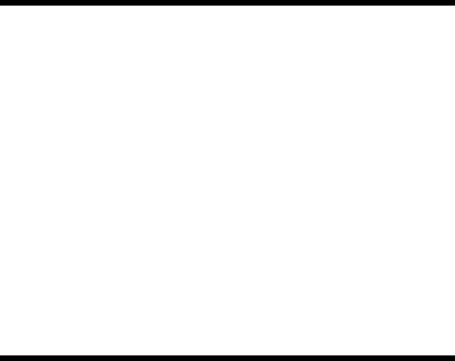

沪指收涨0.5%站上3986点，创业板指大涨3.78%
成长风格王者归来 | 2026年4月10日
今日A股三大指数集体收涨，创业板指表现最为强劲，市场成交额约2.33万亿元，近4000只个股上涨，成长风格全面占优。
一、今日盘面速览
| 指数 |
收盘点位 |
涨跌幅 |
成交额 |
| 上证指数 |
3986.22点 |
+0.50% |
- |
| 创业板指 |
- |
+3.78% |
- |
市场情绪
- 成交额：约2.33万亿元
- 上涨家数：3977家
- 下跌家数：1397家
- 涨停家数：77只
风格特征：沪弱深强，创业板指单日涨幅达3.78%，成长风格明显占优
二、重大事件与政策
国际方面
- 美伊和谈在即：美伊双方将于4月11日在巴基斯坦举行首轮会谈，但双方在停战条款上存在明显分歧
- 特朗普警告伊朗：警告伊朗不要向通过霍尔木兹海峡的油轮收取费用
- IMF下调预期：中东冲突对全球经济构成新一轮冲击，将下调全球经济增长预期
国内政策
- 货运枢纽补链强链：财政部、交通运输部联合发布通知，用3年左右时间支持30个城市实施新一轮国家综合货运枢纽提升行动
- 内蒙古自贸区设立：我国自由贸易试验区扩围至23个，国务院印发内蒙古自贸区总体方案
- 动力电池行业座谈会：四部委联合召开会议，部署规范产业竞争秩序，治理"内卷式"竞争
- 互联网平台价格合规：三部门联合召开指导会，要求平台企业规范补贴行为，遏制恶性价格竞争
三、北向资金动向
| 日期 |
成交额 |
占比 |
备注 |
| 4月10日 |
2807.74亿元 |
12.09% |
成交活跃 |
| 4月9日 |
2593.18亿元 |
12.15% |
- |
| 4月8日 |
2932.75亿元 |
12.05% |
大幅流入 |
成交前三（沪股通）：寒武纪、亨通光电、中信证券
四、板块与资金流向
领涨板块
| 板块 |
涨幅 |
驱动因素 |
| 电力设备 |
+3.50% |
新能源政策加码，一季度业绩预期向好 |
| 非银金融 |
+2.51% |
市场情绪回暖，券商估值修复 |
| 通信 |
+2.04% |
AI应用落地带动算力需求 |
热点细分方向
- 算力硬件：光纤、CPO、液冷服务器、PCB逆势走强，长飞光纤股价创历史新高
- 创新药：延续活跃，海王生物、益佰制药等涨停，AACR会议临近形成催化
- 新能源：锂电板块情绪回暖，政策治理"内卷式"竞争
五、日K线走势分析
近一周走势
| 日期 |
收盘 |
涨跌 |
技术特征 |
| 4月3日 |
3880.10点 |
-1.00% |
大幅缩量 |
| 4月7日 |
3890.17点 |
+0.26% |
地量企稳 |
| 4月8日 |
3995.00点 |
+2.69% |
放量突破，光头光脚大阳线 |
| 4月9日 |
3967.31点 |
-0.69% |
冲高回落，获利盘兑现 |
| 4月10日 |
3986.22点 |
+0.50% |
震荡回升，成长风格领涨 |
上证指数日K线图（TradingView）

技术要点
- 沪指在3950点上方获得支撑，震荡回升
- 创业板指大涨3.78%，成长风格重新占优
- 支撑：3950点、3926点
- 压力：4000点（心理关口）、4050点（月线强阻力）
- 成交量维持活跃，市场情绪逐步企稳
六、后市展望
短期（1-2周）
- 4000点关口争夺持续，关注量能配合
- 美伊和谈进展将影响市场风险偏好
- 4月中旬一季报密集披露，业绩确定性标的受青睐
中期（1-3个月）
- 4月底政治局会议定调二季度政策方向
- 美联储4月28-29日议息会议，关注降息预期
- 主线机会：AI算力、创新药、新能源、高股息防御板块
风险提示
美伊和谈存在不确定性；4000点上方套牢盘压力；季报披露期业绩暴雷风险。股市有风险，投资需谨慎。